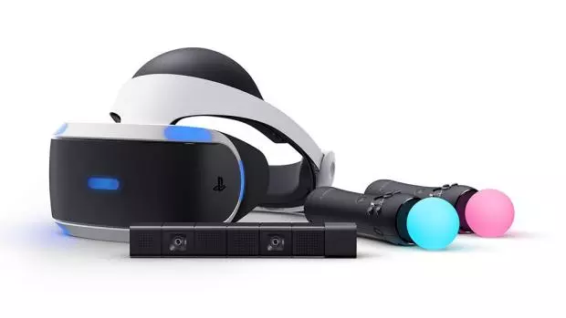

 PlayStation VR, known by the codename Project Morpheus during development, is a virtual reality head-mounted display developed by Sony Interactive Entertainment,[2] which launched on October 13, 2016.[1]
It was designed to be fully functional with the PlayStation 4 home video game console. In certain games and demos for the VR, the player wearing the headset acts separately from other players without the headset. The PlayStation VR system can output a picture to both the PlayStation VR headset and a television simultaneously, with the television either mirroring the picture displayed on the headset, or displaying a separate image for competitive or cooperative gameplay. PlayStation VR works with either the standard DualShock 4 controller or the PlayStation Move controllers.[3]